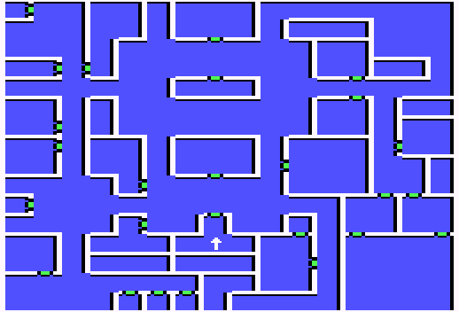

Middlegate
| X | Y | Event |
| 7 | 3 | Middlegate Inn |
| 7 | 7 | Gateway Temple |
| 4 | 6 | Slaughtered Lamb |
| 4 | 4 | SJ Blacksmith |
| 5 | 15 | Exit |
| 8 | 0 | Stairs to cavern |
| 10 | 2 | Nordon |
| 10 | 7 | Turkov's Training |
| 12 | 10 | Brain Detoxification |
| 14 | 8 | Travel Moore |
| 13 | 2 | Arena |
| 7 | 14 | Sleepy Mage Guild |
| 3 | 12 | Edmund's Expeditions |
| 1 | 12 | Join mage guild |
| 0 | 15 | Otto Mapper, Esquire |
| 1 | 9 | Track and trail |
| 2 | 8 | Lock and Key Ltd |
| 0 | 5 | Portal to Sandsobar |
| 1 | 2 | Nordonna |